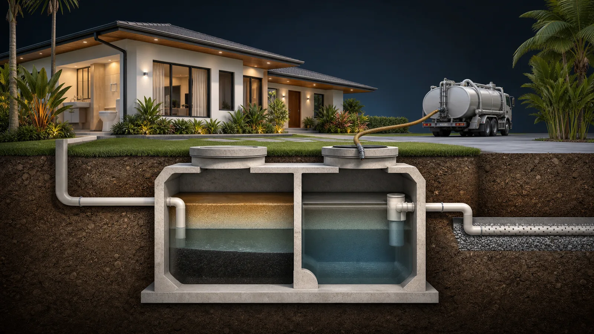

Septic tank siphoning
Removal of accumulated septic waste for homes, apartments, offices, and commercial properties, with access and scope checked before scheduling.
Learn more →
Baradong CR, slow drains, odor, or a full-tank concern? For homes, apartments, offices, and commercial properties, tell us the symptoms and location so the right service can be assessed before scheduling.
Slow drains, foul odors, wastewater backup, and full tanks can look similar. A clear assessment helps prevent the wrong service, wasted time, and repeat disruption.
Removal of accumulated septic waste for homes, apartments, offices, and commercial properties, with access and scope checked before scheduling.
Learn more →Assessment and cleaning support for pozo negro systems showing odor, overflow, or maintenance concerns.
Learn more →Targeted help for blocked toilets, floor drains, sinks, and drainage lines, including guidance when the issue may be deeper.
Learn more →Wastewater enters the tank, solids settle, and liquid continues to the next stage of the system. When buildup becomes excessive, normal flow can slow down and the property may experience odor, backup, or overflow.

Tell us the city or barangay, property type, and what you notice. Photos or a short video can help when safe.
The initial details help distinguish tank maintenance, pozo negro cleaning, and a drainage blockage.
Access point, equipment approach, area availability, and preferred timing are confirmed before dispatch.
The team attends to the confirmed work and explains any next step if another issue is discovered.
Pasig is the center area. Metro Manila, Rizal, Cavite, Laguna, Bulacan, and selected extended locations are handled based on schedule and practical travel access.
Clear, plain-language answers for Filipino homeowners, property managers, and businesses dealing with septic and drainage concerns.
A plain-language guide to slow drains, odors, gurgling, wet ground, overflow, and when a local clog may be the real issue.
Learn more →Understand when a local clog is likely, when tank maintenance may be needed, and what details help the assessment.
Learn more →What to do first when the toilet will not flush, what not to pour, and when one blocked CR may signal a deeper drainage issue.
Learn more →Send your city or barangay, a short description, and clear photos when safe. For urgent overflow or backup, call first.